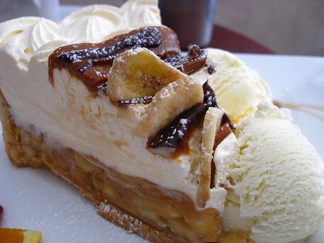
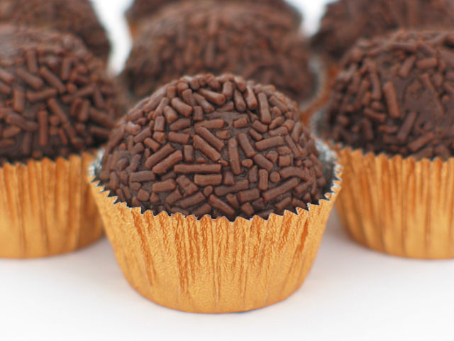
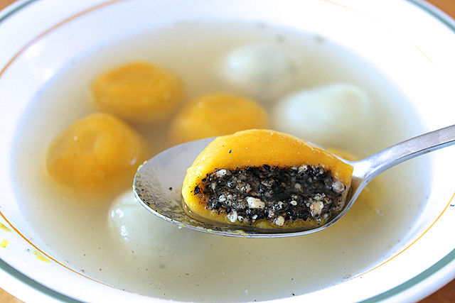

Ras malai is made from a sweet, soft cheesy dumpling that is cooked in sweet milk and spices. You can make the dumpling yourself from milk and semolina, or you can buy them in the store to cook at home.
(picture from Shaharbano on Wikimedia Commons - CC BY-SA 4.0)
Banoffee pie is a pie with caramel, bananas, and cream. You can make the caramel by boiling a can of condensed milk. The name comes from a combination of "banana" and "toffee", which is similar to caramel.
(picure from Glen MacLarty on Wikimedia Commons - CC BY 2.0)
Brigadeirio is a type of chocolate dessert that is very easy to make. Just boil condensed milk, cocoa powder, and a little bit of butter in a pot. After it's cooled back down, you can roll it into balls and put sprinkles on top.
(picture from Mayra (Maych) on Flickr - CC BY-SA 2.0)
Tangyuan is a glutinous rice dumpling that is cooked in sugar water. It is difficult to make, but you can buy frozen tangyuan at the grocery store. There are many different fillings, but the most popular is sesame.
(picture from Bing (cherrylet) on Flickr - CC BY-NC-SA 2.0)